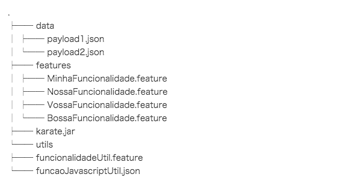

Treinamento de Testes de API
Conceitos:
- O que é uma Web Service / API?
- Estratégia de testes de API
- healthcheck
- contrato
- aceitação
- funcional
- Estrutura basica para criar testes para uma API Rest
- Como manipular diferentes aspectos de requisições
- GET / POST / PUT / DELETE
- Headers
- Query params
- Payload
- Como garantir diferentes aspectos de respostas
- Como estruturar um projeto
- Como executar os testes desenvolvidos
- Como adicionar a execução destes testes em um CI
Ferramenta - Karate DSL:
O Karate DSL é uma ferramenta desenvolvida em Java que permite o desenvolvimento de testes de APIs utilizando
uma sintaxe semelhante à do Gherkin.
Importante: Karate não é BDD!
Sua utilização pode ser feita, basicamente, de duas formas:
- Como biblioteca em um projeto Java (Maven ou Gradle)
- Como arquivo executável (standalone), fazendo download direto no site
Importante: Neste treinamento estamos utilizando o modo standalone.
Dado que esta ferramenta utiliza uma sintaxe semelhante ao Gherkin, os testes são implementados em um arquivo
de feature. Logo, podemos utilizar as seguintes palavras chaves:
- Feature
- Background
- Scenario
- Scenario Outline / Examples
- Given / When / Then / And
- * - (sim, um asterisco, que serve como coringa)
Para o desenvolvimento dos testes, a ferramenta dispõe de alguns comandos pré-definidos, que são descritos no
formato de steps.
Os principais comandos que serão utilizados no treinamento são:
Em caso de dúvidas, cada tópico possui link direto para a sua explicação.
Uma vez criadas features com os cenários de testes, podemos executá-las com a ajuda do karate.jar. O comando
base para execução dos testes é:
java -jar karate.jar diretorioComAsFeatures
Neste formato de execução, podemos utilizar outros comandos em conjunto, para:
- filtrar os testes desejados por tags:
-t ou --tags
- executar os testes em paralelo:
-T ou --threads
- dentre outros (confira o --help ou aqui)
Finalizada a execução dos testes, será gerado um relatório com o resultado dos testes no diretório
target/cucumber-html-reports. Por padrão, o nome do arquivo é
overview-features.html e deve ser aberto no navegador.
Sugestão de estrutura de projeto:

No diretório data ficam os arquivos com exemplos de payloads, contratos, e
quaisquer outros arquivos que possuam dados que serão utilizados durante o teste.
No diretório features ficam os arquivos de features, com a implementação dos
cenários de testes. Caso necessário, podem ser criados sub-diretórios a partir deste, para facilitar a
organização a medida em que o projeto cresce.
No diretório utils ficam os arquivos com funções utilizadas em mais de um cenário
de testes, como features para autenticação, funções para gerar números aleatórios ou capturar data atual em
javascript, etc.
Por fim, o arquivo executável karate.jar é o responsável por executar os testes
criados e gerar o relatório com o resultado da execução dos testes. Importante: não é necessário abrir este
arquivo, apenas utilizá-lo para executar os testes via linha de comando.
Existe ainda o diretório target, gerado após a execução dos testes.
Exercícios
aplicando a estrutura, com a FakeAPI:
Lembre-se que é uma API Fake, ou seja, não possui consistência de dados.
- Criar um cenário de healthcheck para todos os métodos GET de:
- Activities, Authors, Books, CoverPhotos & Users;
- Criar um teste de contrato para os endpoints / métodos:
- Activities -> GET /api/Activities/{id}
- Authors -> GET /api/Authors/{id}
- Criar testes de aceitação para o endpoint /Books, executando os seguintes cenários:
- Criar um novo livro e verificar se foi cadastrado com sucesso (POST)
- Listar os livros cadastrados e verificar se a quantidade é igual a 200 (GET)
- Excluir um livro já cadastrado (DELETE)
- Editar um livro já cadastrado (UPDATE)
- Criar testes para validar os demais fluxos de exceção, executando os seguintes cenários:
- Tentar excluir um livro informando uma String como id (POST) (400)
- Tentar visualizar um livro informando um id não cadastrado (ex.: 201) (GET, 404)
Esta é uma API Rest, desenvolvida para este treinamento e hosteada na nuvem utilizando o heroku.
Para mais informações sobre a API, veja os links abaixo:
Desafios, utilizando a API:
Tag @healthcheck:
- /HEALTHCHECK
- Verificar se API está online
Tag @contract :
- /GET
- Garantir o contrato do retorno da lista de reservas
- Garantir o contrato do retorno de uma reserva específica
Tag @acceptance:
-
/DELETE
- Excluir um reserva com sucesso
-
/GET
- Listar IDs das reservas
- Listar uma reserva específica
- Listar IDs de reservas utilizando o filtro firstname
- Listar IDs de reservas utilizando o filtro lastname
- Listar IDs de reservas utilizando o filtro checkin
- Listar IDs de reservas utilizando o filtro checkout
- Listar IDs de reservas utilizando o filtro checkout and checkout
- Listar IDs de reservas utilizando o filtro name, checkin and checkout date
-
/POST
-
/PUT
- Alterar uma reserva usando o token
- Alterar uma reserva usando o Basic auth
Tag @e2e :
-
/DELETE
- Tentar excluir um reserva que não existe
- Tentar excluir uma reserva sem autorização
-
/GET
- Visualizar erro de servidor 500 quando enviar filtro mal formatado
-
/POST
- Validar retorno 500 quando o payload da reserva estiver inválido
- Validar a criacao de mais de um livro em sequencia
- Criar uma reserva enviando mais parametros no payload da reserva
- Validar retorno 418 quando o header Accept for invalido
-
/PUT
- Tentar alterar uma reserva quando o token não for enviado
- Tentar alterar uma reserva quando o token enviado for inválido
- Tentar alterar uma reserva que não existe
Integração Contínua
FAQ:
Whilst the bugs you find are intentional, the API shouldn't go down so if you come across any requests that
cause the API to go down, let me know via Twitter.